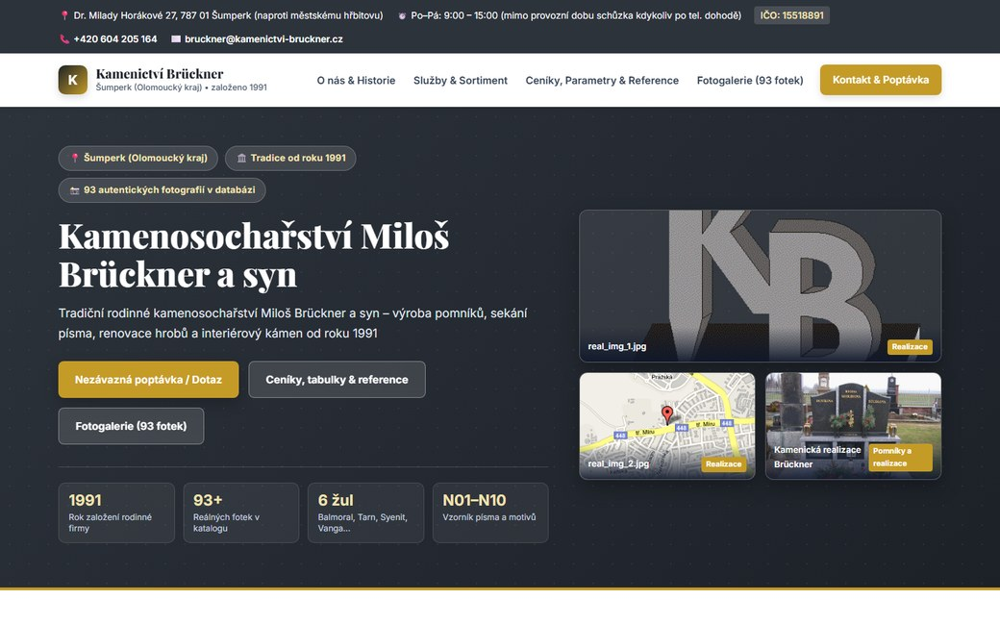
#01 📸 198 fotek v databáziKamenosochařství Brückner
Kamenosochařství, výroba a montáž pomníků a zpracování přírodního kamene
📍 tř. Míru 100, 779 00 Olomouc (u Ústředního hřbitova v Olomouci)
📞 +420 585 412 550 | 🌐 kamenictvi-bruckner.cz
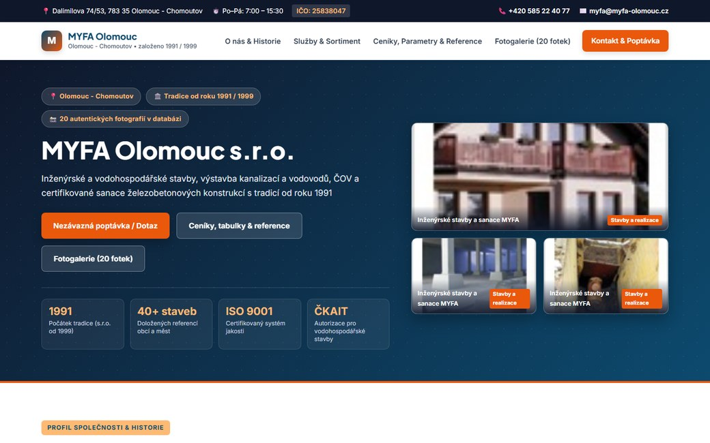
#02 📸 20 fotek v databáziMYFA Olomouc s.r.o.
Inženýrské a vodohospodářské stavby, kanalizace, vodovody a sanace betonu
📍 Dalimilova 74/53, 783 35 Olomouc - Chomoutov
📞 +420 585 22 40 77 | 🌐 myfa-olomouc.cz
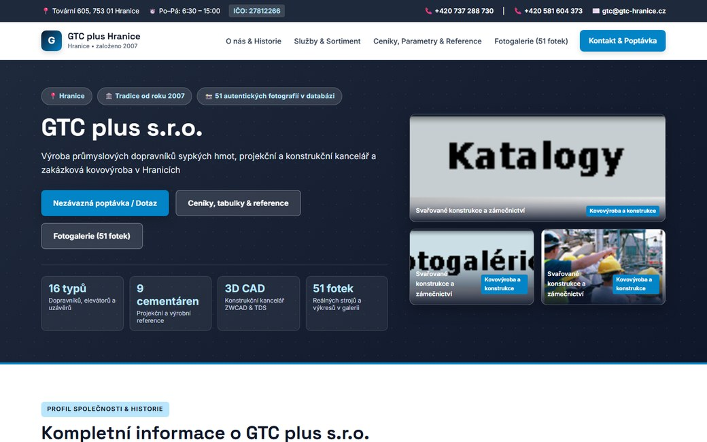
#03 📸 50 fotek v databáziGTC plus s.r.o.
Výroba dopravních zařízení, konstrukční kancelář a svařované konstrukce
📍 Tovární 605, 753 01 Hranice
📞 +420 737 288 730 | 🌐 gtc-hranice.cz
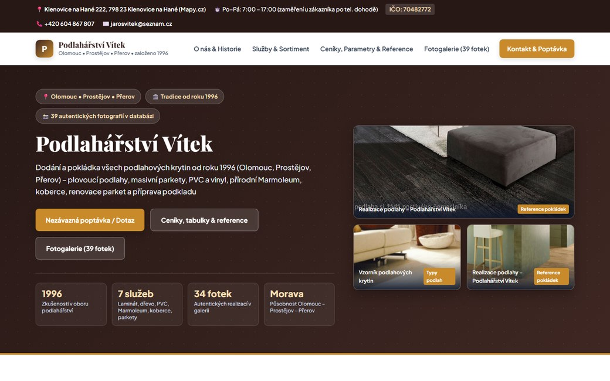
#04 📸 39 fotek v databáziPodlahářství Vítek
Dodání a pokládka podlahových krytin – laminátové, dřevěné, PVC a vinylové podlahy, Marmoleum, koberce a renovace parket
📍 Klenovice na Hané 222, 798 23 Klenovice na Hané
📞 +420 604 867 807 | 🌐 podlaharstvi-vitek.cz
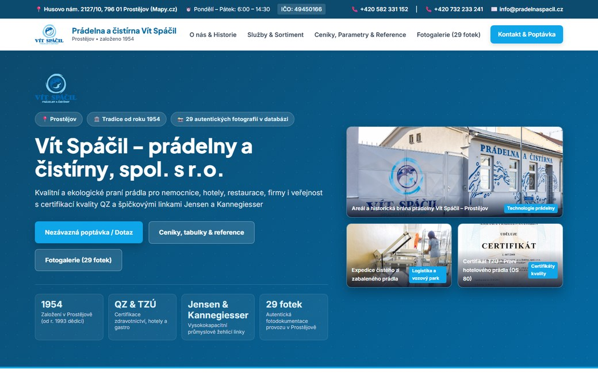
#05 📸 29 fotek v databáziVít Spáčil - prádelny a čistírny, spol. s r.o.
Průmyslová prádelna a čistírna – certifikované praní pro zdravotnictví, hotely, gastro i veřejnost
📍 Husovo nám. 2127/10, 796 01 Prostějov
📞 +420 582 331 152 | 🌐 pradelnaspacil.cz
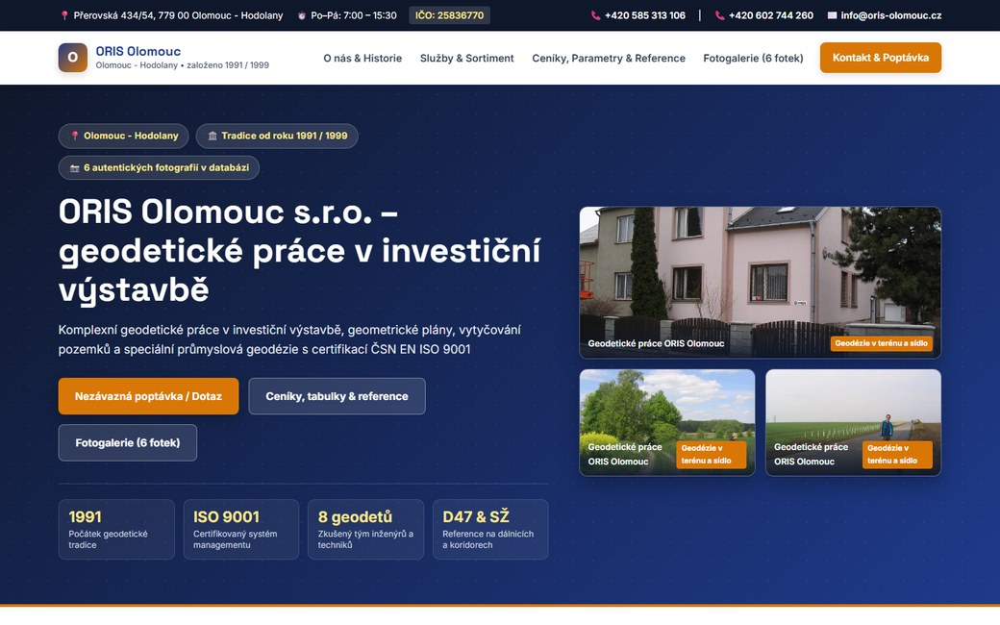
#06 📸 6 fotek v databáziORIS Olomouc s.r.o. – geodetické práce v investiční výstavbě
Inženýrská geodézie, katastr nemovitostí, geometrické plány a vytyčování staveb
📍 Přerovská 434/54, 779 00 Olomouc - Hodolany
📞 +420 585 313 106 | 🌐 oris-olomouc.cz
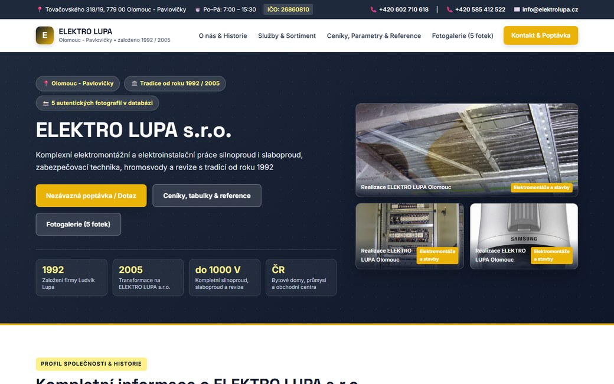
#07 📸 5 fotek v databáziELEKTRO LUPA s.r.o.
Elektromontážní a elektroinstalační práce, silnoproud, slaboproud, EZS/EPS a revize
📍 Tovačovského 318/19, 779 00 Olomouc - Pavlovičky
📞 +420 602 710 618 | 🌐 elektrolupa.cz
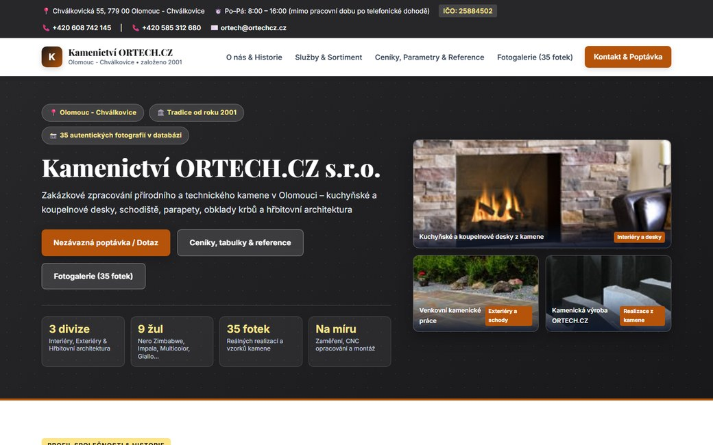
#08 📸 35 fotek v databáziKamenictví ORTECH.CZ s.r.o.
Zpracování přírodního a umělého kamene – kuchyňské desky, schody, krby a pomníky
📍 Chválkovická 55, 779 00 Olomouc - Chválkovice
📞 +420 608 742 145 | 🌐 ortechcz.cz
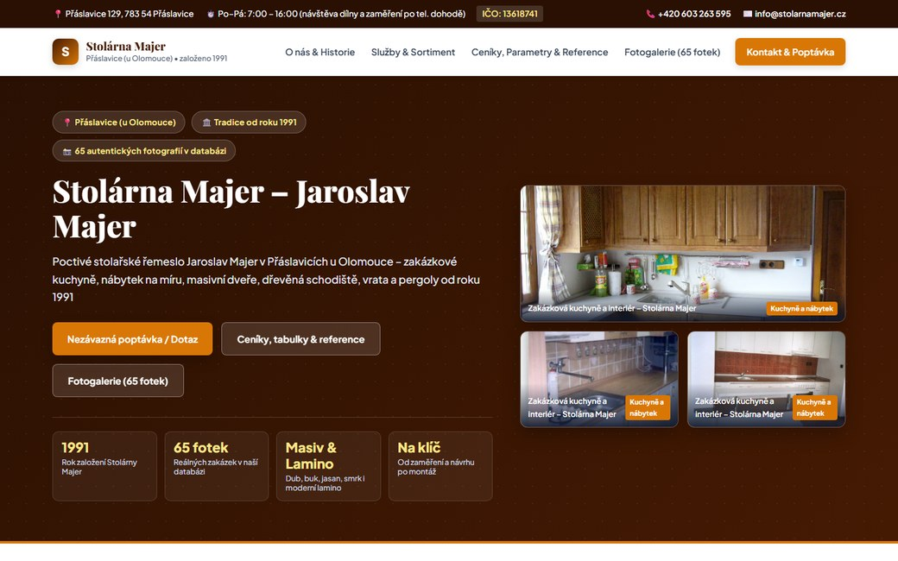
#09 📸 65 fotek v databáziStolárna Majer – Jaroslav Majer
Stolařství a zakázková výroba nábytku, kuchyní, masivních dveří, schodů a vrat
📍 Přáslavice 129, 783 54 Přáslavice
📞 +420 603 263 595 | 🌐 stolarnamajer.cz
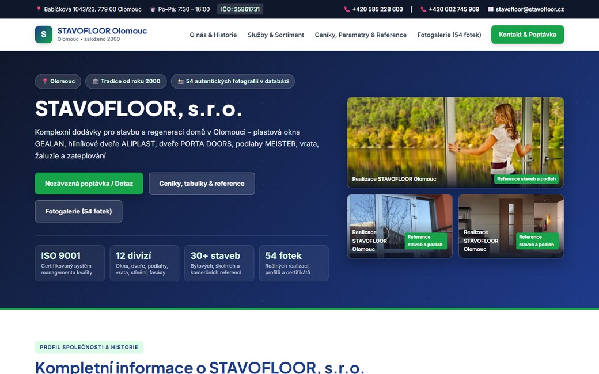
#10 📸 54 fotek v databáziSTAVOFLOOR, s.r.o.
Plastová a hliníková okna a dveře, interiérové dveře, podlahy, vrata, stínící technika a zateplení budov
📍 Babíčkova 1043/23, 779 00 Olomouc
📞 +420 585 228 603 | 🌐 stavofloor.cz
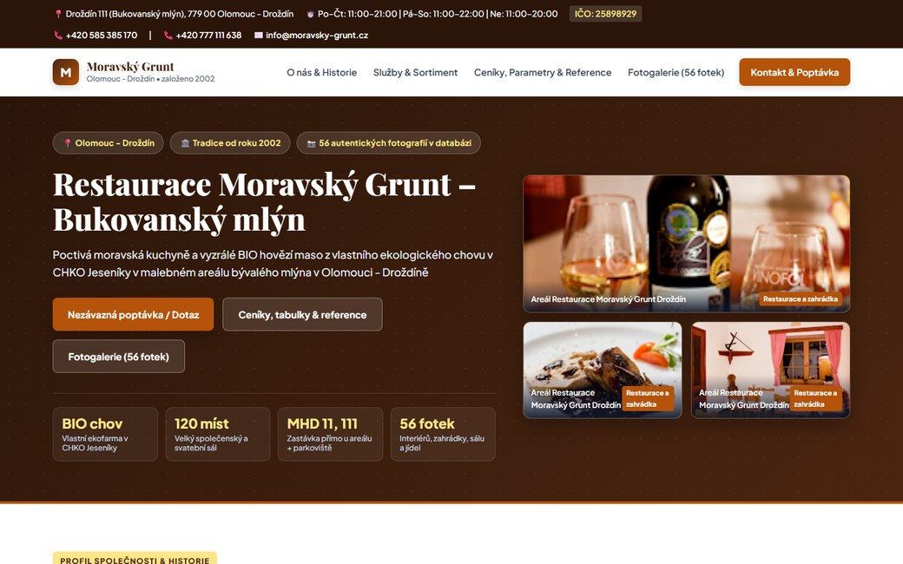
#11 📸 56 fotek v databáziRestaurace Moravský Grunt – Bukovanský mlýn
Stylová restaurace s vlastní BIO ekofarmou v CHKO Jeseníky, svatební sál a zahradní areál
📍 Droždín 111 (Bukovanský mlýn), 779 00 Olomouc - Droždín
📞 +420 585 385 170 | 🌐 moravsky-grunt.cz
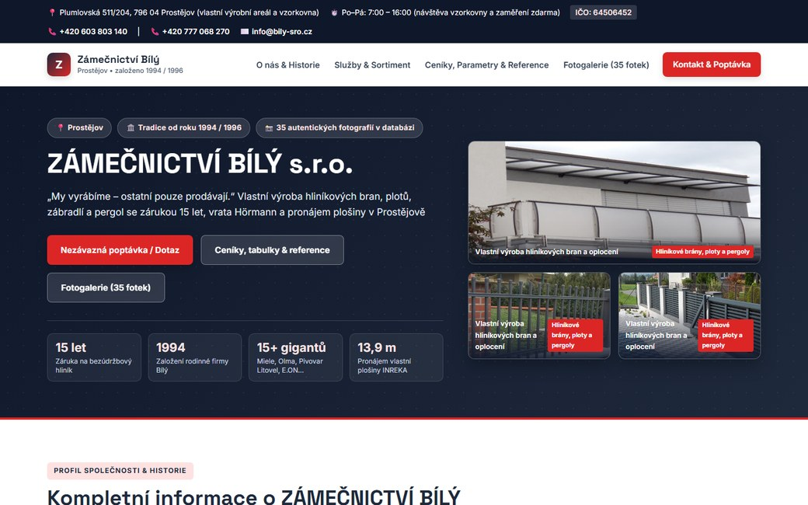
#12 📸 35 fotek v databáziZÁMEČNICTVÍ BÍLÝ s.r.o.
Výroba hliníkových a ocelových bran, plotů, zábradlí, pergol, vrata Hörmann a pronájem plošiny
📍 Plumlovská 511/204, 796 04 Prostějov (vlastní výrobní areál a vzorkovna)
📞 +420 603 803 140 | 🌐 bily-sro.cz
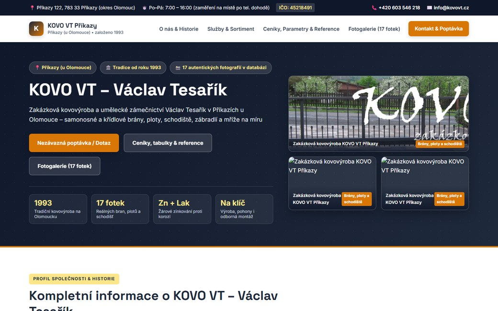
#13 📸 16 fotek v databáziKOVO VT – Václav Tesařík
Zakázková kovovýroba a zámečnictví – brány, kované ploty, schodiště, zábradlí a mříže
📍 Příkazy 122, 783 33 Příkazy (okres Olomouc)
📞 +420 603 546 218 | 🌐 kovovt.cz
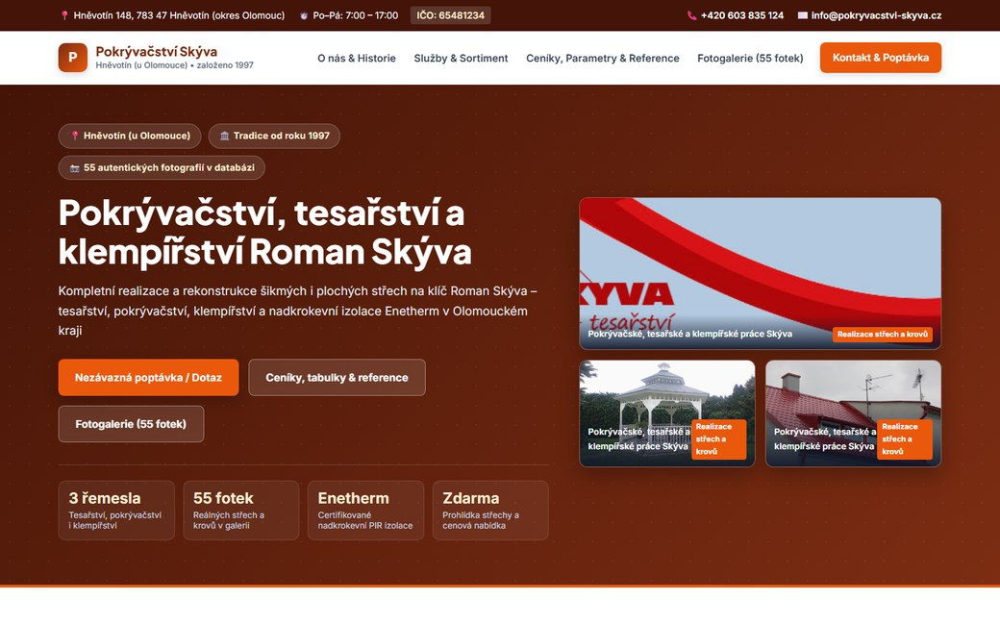
#14 📸 55 fotek v databáziPokrývačství, tesařství a klempířství Roman Skýva
Kompletní střechy na klíč – pokrývačské, tesařské a klempířské práce, izolace střech
📍 Hněvotín 148, 783 47 Hněvotín (okres Olomouc)
📞 +420 603 835 124 | 🌐 pokryvacstvi-skyva.cz
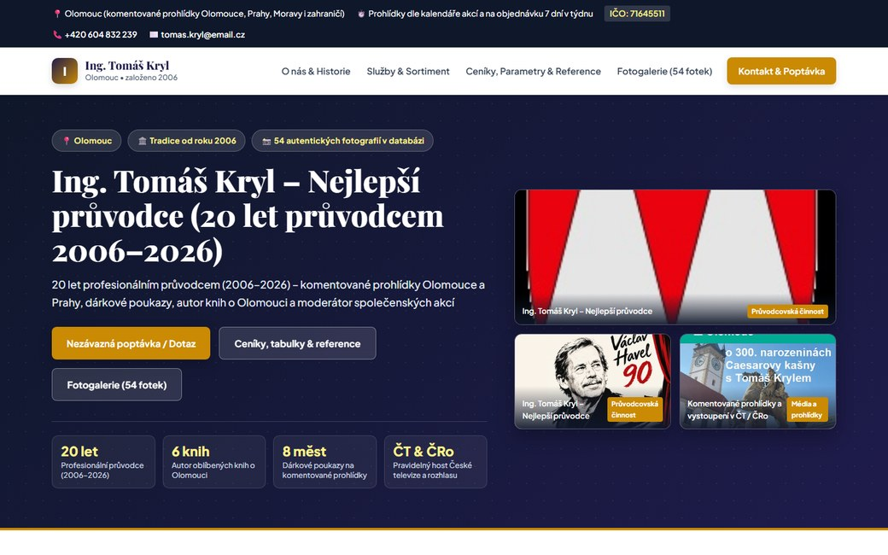
#15 📸 54 fotek v databáziIng. Tomáš Kryl – Nejlepší průvodce (20 let průvodcem 2006–2026)
Komentované prohlídky Olomouce a Prahy, průvodcovské služby, moderování akcí a publikační činnost
📍 Olomouc (komentované prohlídky Olomouce, Prahy, Moravy i zahraničí)
📞 +420 604 832 239 | 🌐 nejlepsipruvodce.cz
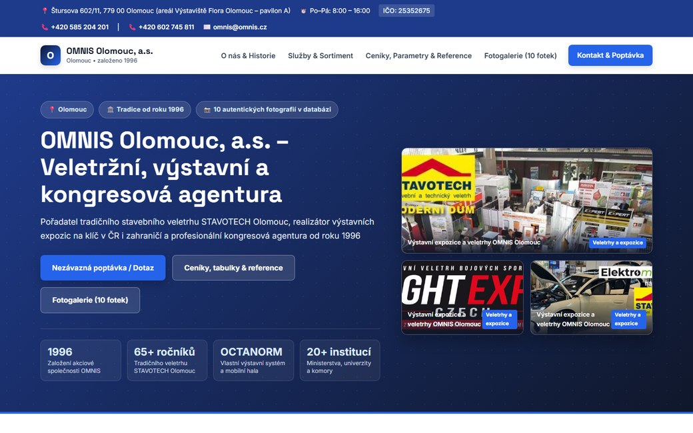
#16 📸 10 fotek v databáziOMNIS Olomouc, a.s. – Veletržní, výstavní a kongresová agentura
Pořádání veletrhů (Stavotech), realizace výstavních expozic Octanorm a kongresová agentura
📍 Štursova 602/11, 779 00 Olomouc (areál Výstaviště Flora Olomouc – pavilon A)
📞 +420 585 204 201 | 🌐 omnis.cz
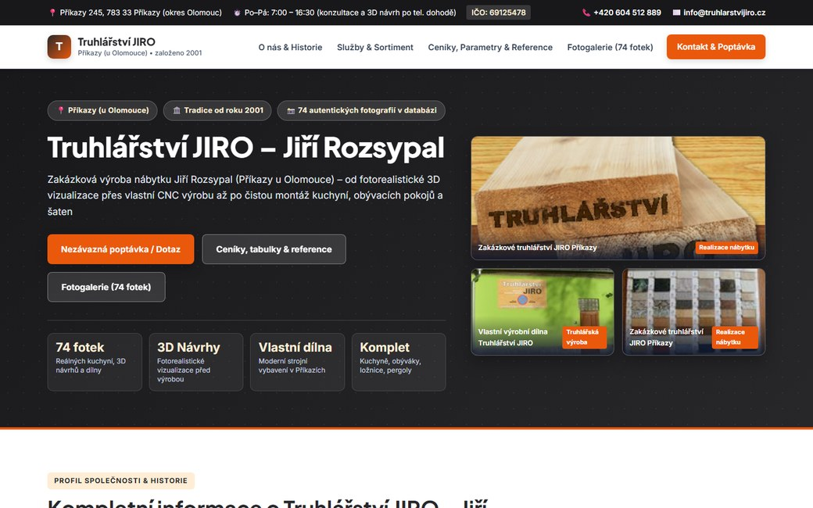
#17 📸 74 fotek v databáziTruhlářství JIRO – Jiří Rozsypal
Zakázkové truhlářství, 3D vizualizace interiérů, kuchyně na míru, vestavěné skříně a nábytek
📍 Příkazy 245, 783 33 Příkazy (okres Olomouc)
📞 +420 604 512 889 | 🌐 truhlarstvijiro.cz
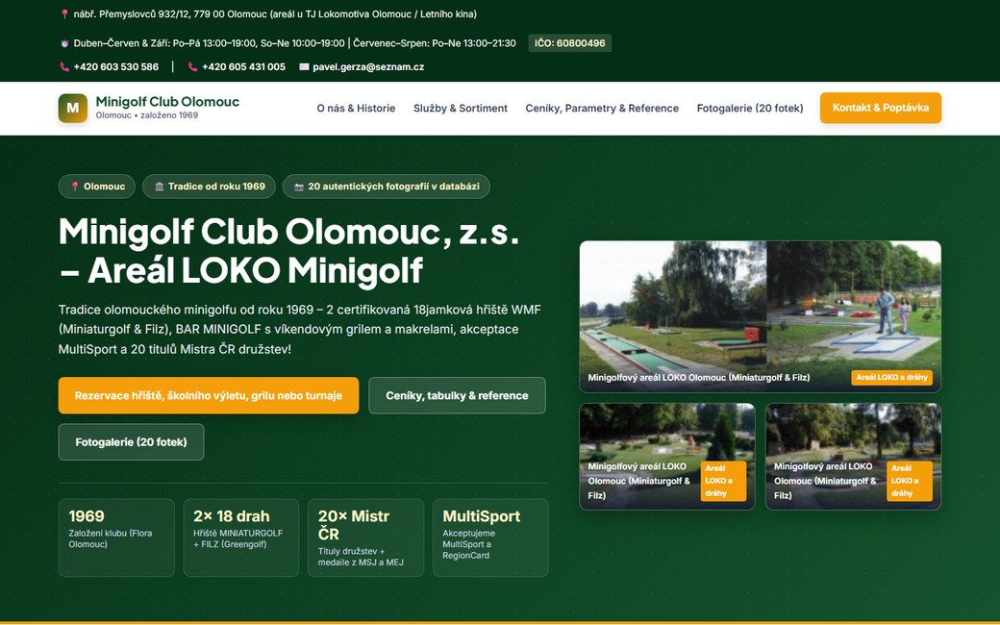
#18 📸 20 fotek v databáziMinigolf Club Olomouc, z.s. – Areál LOKO Minigolf
Sportovní a rekreační minigolfový areál (Miniaturgolf & Filz), Bar Minigolf s grilem a 20× Mistr ČR družstev
📍 nábř. Přemyslovců 932/12, 779 00 Olomouc (areál u TJ Lokomotiva Olomouc / Letního kina)
📞 +420 603 530 586 | 🌐 minigolfolomouc.cz
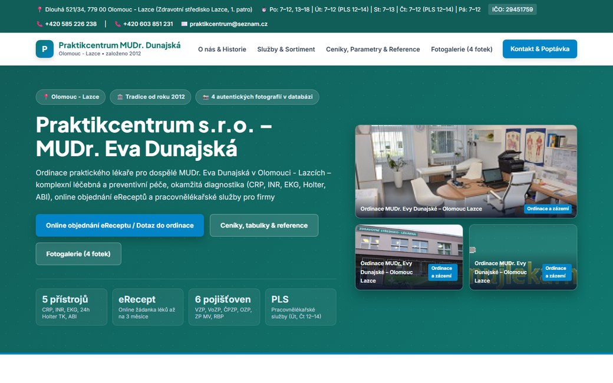
#19 📸 4 fotek v databáziPraktikcentrum s.r.o. – MUDr. Eva Dunajská
Ordinace praktického lékaře pro dospělé a pracovnělékařské služby (PLS)
📍 Dlouhá 521/34, 779 00 Olomouc - Lazce (Zdravotní středisko Lazce, 1. patro)
📞 +420 585 226 238 | 🌐 praktikcentrum.cz
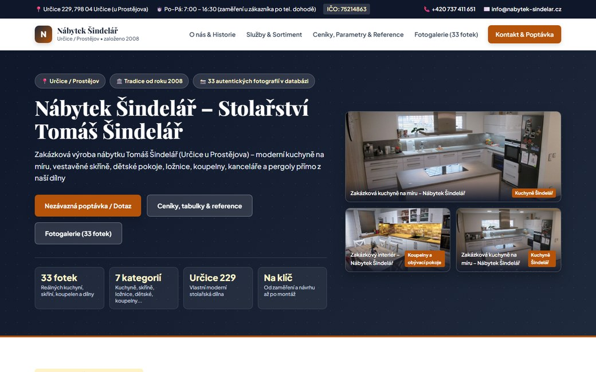
#20 📸 33 fotek v databáziNábytek Šindelář – Stolařství Tomáš Šindelář
Zakázková výroba nábytku – kuchyně na míru, vestavěné skříně, dětské pokoje, ložnice, koupelny a pergoly
📍 Určice 229, 798 04 Určice (u Prostějova)
📞 +420 737 411 651 | 🌐 nabytek-sindelar.cz